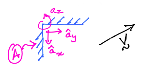
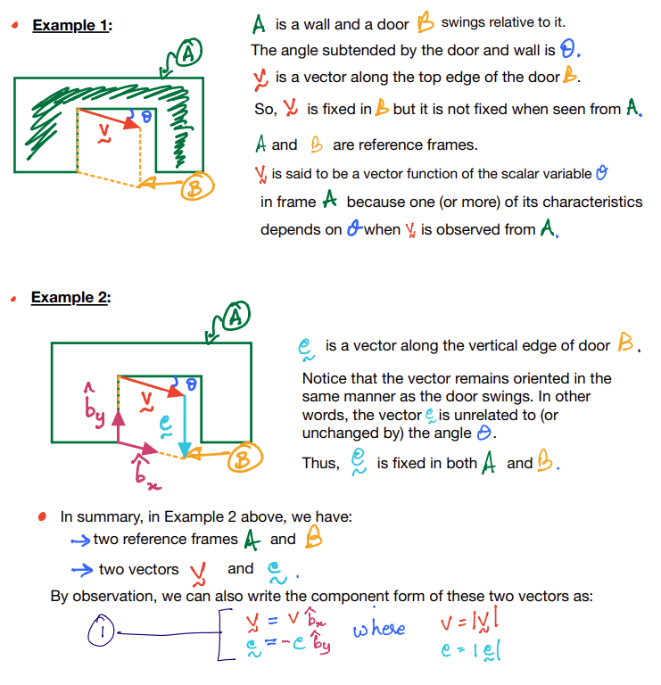
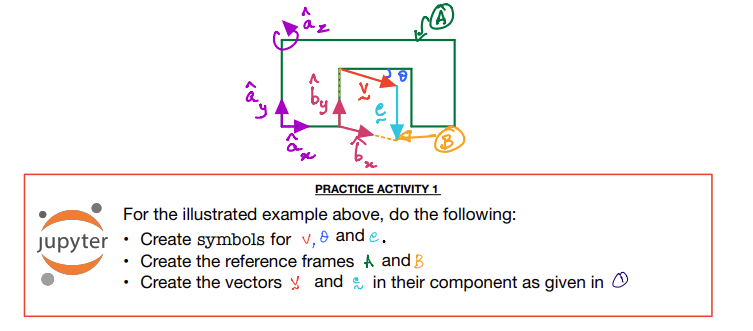

Vectors and Reference Frames¶

The figure above shows a reference frame \(A\) and vector \(\vec{v}\).
\(\vec{v}\) is said to be fixed in the frame \(A\) if and only if none of the characteristics of \(\vec{v}\) are seen to change when it is observed from \(A\).

Notice that I have introduced the unit vectors \(\hat{b}_x\) and \(\hat{b}_y\) for the reference frame \(B\) but \(\hat{b}_z\) is not shown though it is orthogonal to both \(\hat{b}_x\) and \(\hat{b}_y\).
For sake of developing subsequent discussions, we will now also introduce a dextral set of unit vectors for frame
\[
A: \: \hat{a}_x,\;\hat{a}_y\:\&\:\hat{a}_z
\]
